Align the front leg of the tripod with the
Celestial Pole.
Please be aware of magnetic interferance
around the phone.

The compass compensates declination
from the magnetic pole (based on your
location and altitude) using the World
Magnetic Model provided thanks to NOAA